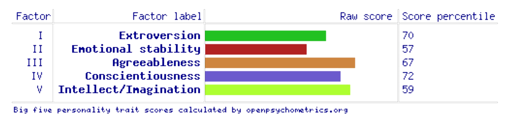

The results from a
Learning Styles test taken recently show that I am an auditory/visual learner,
gaining most of my knowledge by either hearing and listening to what is happening or reading and
seeing pictures. People that are auditory learners understand and remember the things that they hear,
and store information by the way it sounds. They have an easier time understanding instructions that
are spoken rather than written. Those that are visual learners understand and remember things by sight,
hence the name. They can picture what they are learning in their head and learn best by using primarily
visual learning methods such as flashcards. The third learning style which was my minor score is the
tactile method. Tactile learners gain knowledge and experience best through hands-on learning and
practice of skills. Their primary way of learning is by doing activities and experiencing what they
are learning. The scores I received in the test were split almost evenly between the three methods
tested for, being auditory (35%), visual (35%), and tactile (30%). This means that there is the
possibility I am a mixture of all three learning styles as there is always a margin of error in tests
such as this and the results given could be due to rounding biases in the tests calculations.
Big Five Personality Test
I chose to take a
Big Five Personality test as my third choice as it is regarded as the most accepted
and commonly used model of personality in the study of psychology. The specific one I chose to do uses
the Big-Five Factor Markers from the International Personality Item Pool developed by American Psychologist
Lew Goldberg in 1992. The results I gained from this test are split into five factor markers (as the name
of the test might suggest!) consisting of Extroversion which is a factor of how outgoing and social you
are, Emotional Stability which is a measure of your ability to remain stable and balanced, Agreeableness
which is a factor of how friendly and optimistic you may be, Conscientiousness which is how careful and
diligent you are, and Intellect/Imagination which is how open to new experiences you are. I achieved scores
in the 70th, 57th, 67th, 72nd, and 59th respectively, all towards the larger end of the spectrum as seen below.

My thoughts?
Personally, none of these test results directly affect me as I already knew who I was as a person and the
best methods for me to learn something, and those things are unlikely to change because of an online test of
any variety. However that being said, the MBTI test seemed to be the most accurate as far as describing who
I am as a person. Having read through the information on strengths & weaknesses and work habits for the ENFJ, I
picked up some interesting tips and tricks that can apply to general life that would be helpful for me as a person.
The results may slightly influence my team behaviour in terms of making sure I don't allow myself to become
too weighed down when helping people with any problems they have, as well as ensuring that my good nature is
not taken advantage of by someone looking to slack off and not put in the required work, forcing me to do
significantly more than what is my fair share of work, but apart from these two things my inherent team
behaviour will not change as I was already the same respectful, empathetic, and understanding person that I
am, and I know how to diplomatically deal with problems that may arise in a fair and just manner.
Taking these results directly into consideration when forming a team, I would be sure to choose people
that have complementary personalities that mesh together well, as well as ensuring that I know what they
believe their strengths & weaknesses to be and what their test results suggest their strengths and weaknesses
are. If I do not have a hand in choosing the members of the team, I would find out the personalities of
everyone involved and try to understand their ways of thinking. With the knowledge of that, I would make
sure they are doing a task that plays on their strengths to create the most effective team possible.